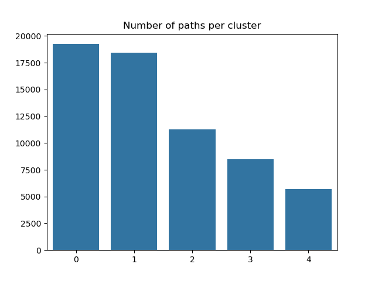

In-game behaviours
-
Duration of the path in seconds
This is the time taken by the player to complete the path.

-
The number of backtracks
This feature is the number of backtracks made by the player during the path.

-
The number of paths attempted by the player before the one played
This feature informs us how much training the player had before he played the path recorded. It is negatively correlated with the time taken to finish the path recorded, even though ~50% of the IP addresses appear only 1 time (heavily right-skewed distribution).

-
Position mean
Character position of succeding clicked link on article page, averaged across all edges of path.

-
Position std
Standard deviation of character position of succeding clicked link within a path.

-
The path length
Simple measure of number of edges in path (pages clicked on) from beginning to end. This also therefore contains player backtracks, which will increase the count of edges in path.

-
The ratio between the user path length and the shortest path length
This feature is the ratio between the length of the path taken by the player and the length of the shortest path between the start and end articles.

But one can also think of more clever and more sophisticated features!
-
The coarse mean time per edge
Measure of amount of time, on average, that the player took to travel from one edge to another in the path. It is called "coarse" because it is a global measure, that does not take into account outlier edges like the median could. This is especially noticeable on paths where the player disconnected, for example.

-
The path closeness absolute sum
As each page in the path has a closeness centrality associated to it from the full network of Wikipedia, this features is obtained by looking at the derivative of the closeness centrality of each page in the path (that is, the delta between the closeness centrality of a page and the previous one in the path) and summing the absolute value of these deltas before and after the maximal degree page in the path. This is meant to quantify if the player is strongly looking for a hub page in the path, reaches it (as the maximal degree page is assumed to be a hub page) and then goesto a specific page from there, i.e. the target page. Indeed, a good player is expected to have a strongly positive delta before the maximal degree page and a strongly negative delta after it. We take the absolute value then sum them to have a single feature that aims at quantifying this behavior.

-
The semantic similarity metric
This is a measure of the average similarity between two successive terms in the given path. The feature is calculated by computing the cosine similarity (normalised dot product) between embeddings (one-hot vectors projected to a lower dimensionality subspace) given by a sentence transformer, which is a model specifically trained in order to give embeddings which have "semantically relevant" / "semantically informative" relative positions. As such, the cosine similarity gives a measure of logical similarity of the words. A value of -1 represents opposite meanings / topics, around 0 means unrelated, and around 1 means highly similar meanings / topics. The mean of this is supposed to approximately capture how related topics globally were on a given path.

We can see that the features in the first column are very heavy tailed, for this reason we will apply a log transform to them.
Taking the log of backtrack (2nd row first column) does not help (probably as it is discrete and has only a few different values).
We will then normalize the features:
- We use z-score normalization
- NaN values in certain features are replaced by the mean
Once features have been extracted, it’s time for clustering. We performed clustering to validate that we achieve a meaningful set of latent variables for player paths,
in addition to being able to classify each type of player.
We tested many clustering techniques and chose the Leiden clustering method, which works best for our data.
The Leiden algorithm is a clustering method that is an improved version of the Louvain algorithm. It aims to identify cohesive groups or clusters within a larger network by optimizing the network's modularity, which measures the strength of division into communities. The Leiden algorithm computes a clustering on a KNN graph obtained from the PC reduced expression space. It starts by assigning each node in the network to its own cluster, which forms the initial partition. It then iterates through each node, considering moving it to a neighbouring cluster to see if it improves the network's modularity. This process continues until no further improvements can be made, resulting in a refined partition of the network where nodes in the same cluster are more connected to each other than to nodes in other clusters. Leiden creates clusters by considering the number of links between nodes in a cluster versus the overall expected number of links in the dataset. nature.com
The following heatmap shows the clustering results, with columns representing features and rows for each of the 5 clusters. The values and colours represent the variation from the mean for each feature of each cluster.

The semantic similarity feature doesn’t seem to vary too much across clusters. This can be interpreted in the following way: the performance and strategies of the players do not depend too much on the initial and target articles. Simply put, the words and their meaning are more or less alike independently of their clusters.
Right away we notice some clusters are very distinct. For others, it’s less clear. Let’s dive in cluster by cluster, shall we?!
The clusters
The slow (naturally bad) ones
They are relatively slow, do not backtrack, click lower on the article, but this varies, stay a while on each page (the most amount), have a high ratio (one of the worst)
The short/fast ones
They are very quick, click early on the page most times, and ratio so good because they do not finish most of their games: ( so ratio = user path/ shortest path can be even greater than 1). Small ratio but bias, path length so short because they do not finish, however they seem to reach hubs fast
The lucky (naturally good) ones
They are fast, do not backtrack, click on an early links most times, finish most times but do not with a perfect ratio, as they do not reach hubs fast.
The lost ones
They are slow, backtrack very frequently, have long paths, do not reach hubs easily (don’t play very well), and have an overall pretty bad ratio.
The experimented ones
They are fast, do not backtrack much, have done a lot of games before, and finish most of their games.
The figure below shows the number or paths or datapoints in each cluster.
Additionally, the two following figures show the distributions and boxplot of each feature coloured for each cluster. The information here is the same as discussed previously, but visualized in a different way.


In these results all timed-out games were removed. What happens if we leave them in? Well, as shown by the figure below, a 6th cluster is created.

By digging a little deeper, we notice that leaving them in simply created an additional cluster with nearly all timed-out games. This makes sense many of our features depend on time, and so games with a time-out will be very different from other games in terms of time and will therefore form a separate cluster.

validation
In order to check the Leiden clustering's robustness, we used 5-fold cross-validation. Due to the clusters not having a fixed ID across runs, we performed matching using the clustroids nearest to those in a given fold across other folds. Once this is done, we can plot the original clustroids and coarse_mean_time_histogram nearest neighbors across folds, and see how close they are in the UMAP embedding space. From the following plot, we see they are quite close to each other !
s